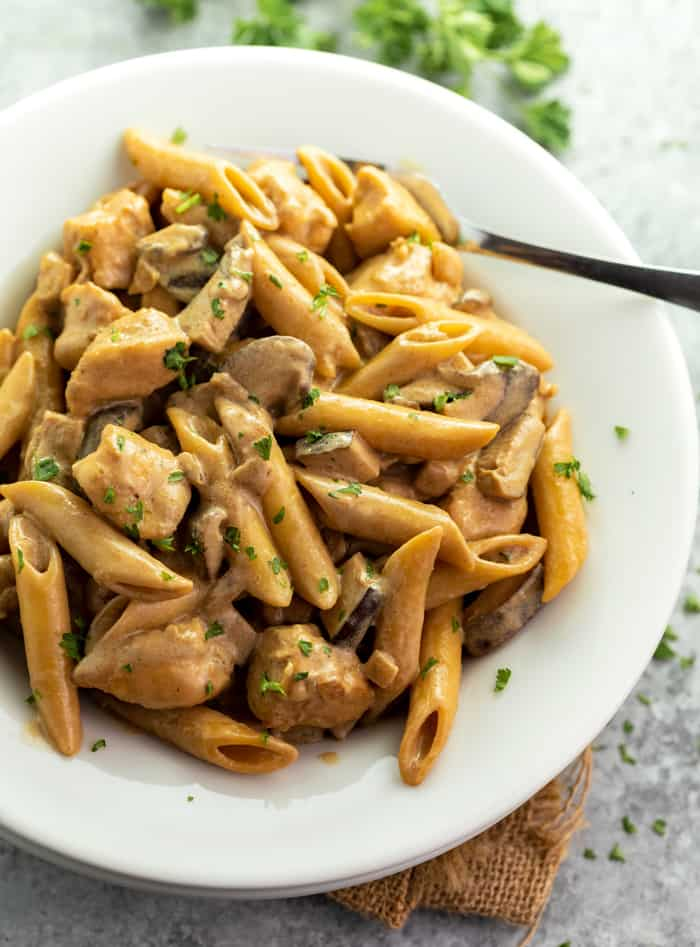

Pasta Da Vinci

Description
This Cheesecake Factory Copycat recipe for Pasta Da Vinci is easy
to make at home and is full of flavor! The savory pasta is surrounded by
a creamy marsala wine sauce with swirls of caramelized onions and flavorful
mushrooms
Ingredients
- 2 tablespoons olive oil
- 2 boneless/skinless chicken breasts
- Ground pepper and salt
- 1/3 cup all-purpose flour: this is optional
- 4 tablespoons Butter
- 1 red onion, dice
- 1 lb. Morel or Shiitake Mushrooms; sliced, more or less,
your preferenc
- 2 cloves garlic, crushed
- 1 cup Marsala wine, or Madeira
- 1/2 cup sour cream
- 1 cup heavy cream
- 1 to 2 tablespoons COLD butter
- 3/4 pound penne
Steps
- Cut the chicken in bite-sized cubes and season with salt and pepper.
Toss in flour for added texture if desired.
- Heat the olive oil over medium heat and add the chicken.
Cook for about 8 minutes, tossing occasionally, until nearly cooked
through. Remove the chicken from the skillet and set aside.
- Add the butter to the same skillet over medium-low heat.
Add the onions and cook slowly until caramelized. Stir often to
prevent burning. They will get much softer and start to brown after
about 15 minutes.
- Add the mushrooms and garlic to the pan and sautee until the
mushrooms soften and also begin to brown.
- Add the wine to the pan and use a spatula to scrape up the
remaining brown bits on the bottom of the pan. This will give the
sauce tremendous flavor. Let the wine bubble gently for about
5 minutes.
- While the wine reduces, cook the penne according to package
instructions, drain, and set aside when finished
- Reduce the heat to low and add the sour cream and the heavy cream,
stirring until melted. Swirl in the cold butter until melted.
Add the chicken back to the pan.
- Toss the sauce with the penne and serve!
Home